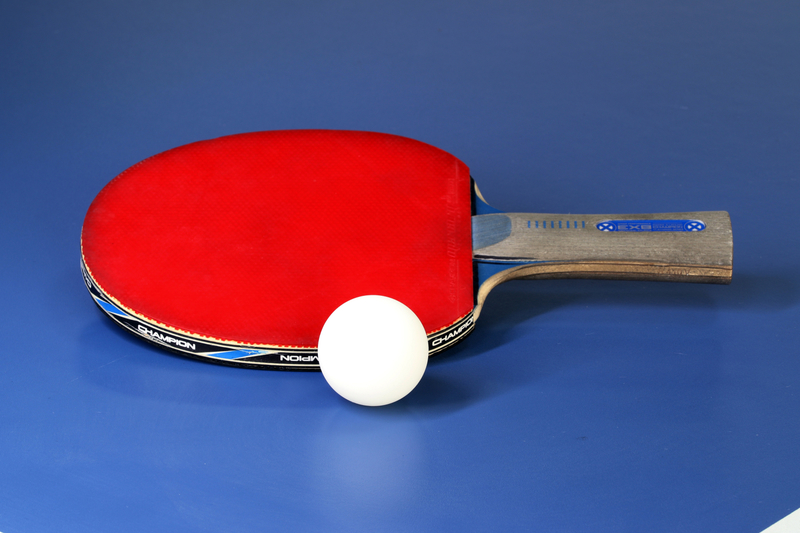
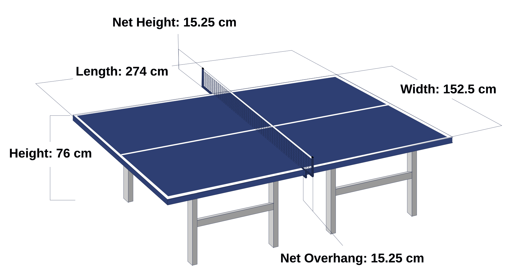

Table tennis is a racket sport played on a table divided by a net. Players hit a lightweight ball back and forth using small rackets. Although the basic goal of the game is simple, players can use different types of speed, spin, placement, and strategy during a match.
I started playing table tennis in 2024 and have continued playing it as one of my hobbies. I enjoy the sport because rallies can be fast and every point requires quick reactions and good control. It is also fun to improve different techniques over time.
I usually play one or two times per week. I often play with my twin brother, which gives me someone to practice rallies and matches with.
My playing style is generally all-around, with a combination of offensive shots and spin. I usually play from close or medium distance from the table. My forehand is useful for attacking, while I also use my backhand for blocking shots.
Topspin is an important part of how I play. One area I continue working on is reading the spin on the ball because different types of spin can change how the ball reacts when it reaches my racket.
Table tennis equipment includes a racket, table tennis balls, a table, and a net. Different rackets and rubber surfaces can affect speed, control, and spin. I currently use a JOOLA Red Carbon X racket with red rubber on my forehand side and black rubber on my backhand side.
I am still developing my skills as a player. I want to become more consistent during rallies, improve my ability to recognize spin, and develop stronger attacking shots. Continuing to practice and play against other people gives me opportunities to improve.